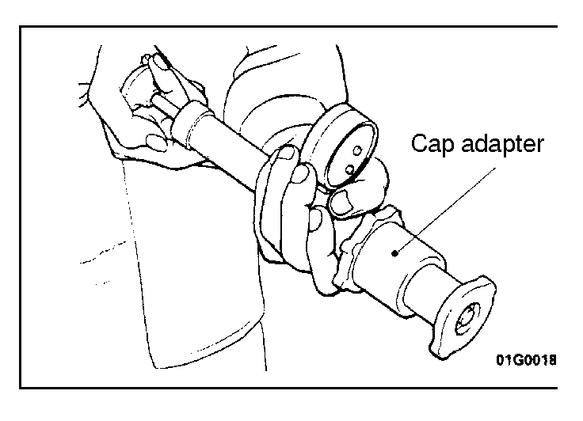

![[Previous]](https://mitsubishitechinfo.com/data/F24S/BUTTONS/fprevg.png)
![[Next]](https://mitsubishitechinfo.com/data/F24S/BUTTONS/fnextg.png)

RADIATOR CAP VALVE OPENING PRESSURE CHECK
1.Use a cap adapter to attach the radiator cap to the tester.
2.Increase the pressure until the indicator of the gauge stops moving.
Standard value:
<2.0L Engine (Non-turbo)>
94 - 122 kPa (14 - 18 psi)
<2.0L Engine (Turbo) and 2.4L Engine>
75 - 105 kPa (11 - 15 psi)
Limit:
<2.0L Engine (Turbo) and 2.4L Engine>
65 kPa (9.2 psi)
3.Replace the radiator cap if the reading does not remain at or above the limit.
NOTE
Be sure that the radiator cap is clean before testing, since rust or other foreign material on the radiator cap seal may cause an improper reading.